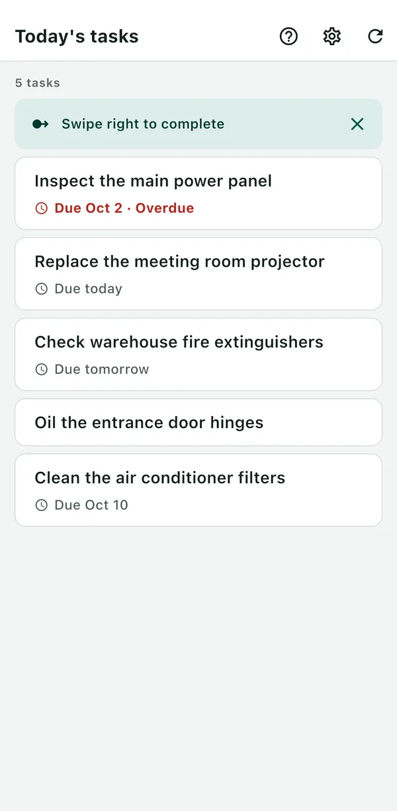
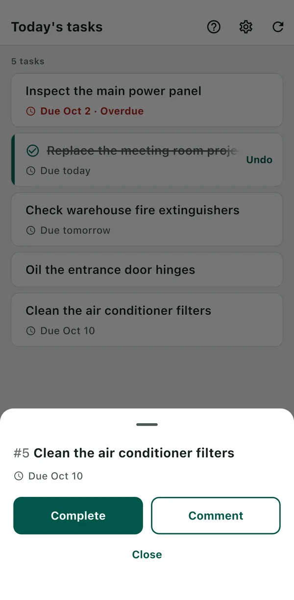

BeatMine for Redmine
An app for reporting on the Redmine tasks assigned to you from your iPhone, in just a few taps. BeatMine is not an official Redmine app and is not affiliated with the Redmine developers.
- Only your own unfinished tasks are listed. Overdue tasks are shown in red.
- Swipe a task right to complete it. You can undo it right away.
- Tap a task to send a comment. It is saved in the Redmine history.


What you need
- Redmine 6.0, 6.1 or 7.0.
- You can open that Redmine over HTTPS from this device.
- The REST API is enabled in Redmine (a setting for your Redmine administrator).
- Your API key. If you don't have it at hand, use “Get the API key in Redmine” on the connection screen.
Environments that don't work are listed under “Not supported”.
Getting started
- Open the app and enter your Redmine URL.
- Tap “Get the API key in Redmine”. Redmine opens in your browser. Sign in and copy the API key shown. Return to BeatMine and tap “Paste and connect”. If you already have your API key, you can enter it and tap “Connect”.
- Your task list appears.
If something goes wrong
Look for the message shown on the screen.
When connecting
If you see “Can't connect to Redmine.”, check the cause. A wrong URL or API key is shown under that field. Other causes are shown when you tap “Details”.
| Cause | What you can do |
|---|---|
| “The Redmine URL is incorrect.” | Open the URL in your device's browser. If it doesn't open, the URL may be mistyped, or you may be trying to reach an internal-only Redmine from outside your organization. |
| “The API key is incorrect.” | Enter the API key again. Tap “Get the API key in Redmine”, then copy and paste the API key shown. This app can't be used if there is another sign-in (such as Basic authentication) in front of Redmine. |
| “The Redmine API is disabled. Ask your Redmine administrator to enable it.” | Ask for the REST API to be enabled in Redmine. |
| “Can't verify Redmine's certificate.” | This device can't verify the certificate of your Redmine. Redmine servers that use a private certificate (one issued only within your organization) are not supported. This message also appears if you haven't finished signing in to a Wi-Fi network, or if the device's date and time are wrong. |
When loading, completing or commenting
| Message | What you can do |
|---|---|
| “Network error” | Try again where you have a signal. This also appears when Redmine is temporarily not responding. |
| “Updated by another user. Please reload.” | Someone else changed the task. Reload, check its current state, and then try again. |
| “You don't have permission to complete this.” (a similar message appears for commenting and loading) | This is not allowed in your Redmine. Ask your Redmine administrator. |
| “Can't complete because it has unfinished subtasks.” | Complete all subtasks first. |
| “Can't complete because it's blocked by an unfinished task.” | Complete the blocking task first (shown under “Related issues” in Redmine). |
| “The change couldn't be made.” | Redmine did not accept the change. This happens when a field must be filled in to complete the task. In that case, complete it in Redmine. |
| “Couldn't confirm that it was sent. Please reload.” | The app couldn't confirm whether your update reached Redmine. Reloading checks again.
|
| “Something went wrong in the app. Please reload.” | If reloading doesn't fix it, your Redmine may not be supported (for example, older than 6.0). |
Other common questions
- A completed task got an unexpected status (such as “Rejected”)
- The app uses the first closed status you're allowed to set for that task, in Redmine's status order. The status used is shown in the completion notice. Tap “Undo” on the completed task (or in the notice) to revert it. You can't undo after reloading the list, or if Redmine doesn't allow changing the status back. In that case, change it back in Redmine. If your Redmine administrator changes the status order (putting “Closed” above “Rejected”), a different status is chosen.
- I was asked for my password when getting the API key (Redmine 7.0)
- Redmine asks for your password again some time after you sign in. Enter it to see your API key.
- Some tasks are missing from the list
- The list shows only tasks assigned to you that are not closed and whose start date is not in the future. Tasks in closed projects are not shown. The list is not filtered by due date.
- Before passing on or disposing of your device
- “Delete connection” in “Settings” removes your API key, comment drafts and records of unconfirmed updates from the device.
Not supported
The following may work, but have not been tested.
- Redmine older than 6.0
- Redmine with plugins
- Hosted Redmine services (My Redmine, Planio and others)
- Private certificates issued only within your organization
- Authentication in front of Redmine (such as Basic authentication)
- SSO
Contact
Please send bug reports and feedback by email.
If you have a GitHub account, you can also use GitHub Issues. Issues are public.
Please don't include your API key, passwords, Redmine URL, task details or anything else you want to keep private. Including the following information helps us respond faster.
- The app version (Settings > General > iPhone Storage > BeatMine. Leave it out if you can't find it.)
- Your iPhone model and iOS version
- Your Redmine version (if you know it)
- The message shown on the screen (such as “Network error”) and what you were doing
Updated October 3, 2026